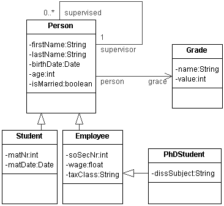

Navigation: Introduction - 1. The university model - 2. Transformation rules - 3. The animation
This first step will explain the UML model and a few OCL rules which are used in this tutorial.
The chapter is divided into the following parts:
An example UML model is shown below. You can open the model and its OCL rules in a new window to compare it to the SQL-Code generated during the animation in the third step of the tutorial. If the window will not open, use this link to open the window without JavaScript.

As you can see, the model represents a very simple abstraction of persons who work or study at university.
Each Person has a firstName and a lastName, a birthDate and an age. Each Person could be married or not, specified by the boolean value isMarried. Each Person could have a Grade specified by the attribute grade and be supervised by one or no supervisor who is also an instance of the class Person. Furthermore, a Person could be the supervisor of between zero and n Persons.
The class Person has different subclasses:
Every Student is a Person who has a matriculation number (matNr) and a matriculation date (matDate).
Every Employee is a Person who has a social security number (soSecNr), a wage and a taxClass.
A PhDStudent is a special Employee who has a dissertation subject (dissSubject).
The class Grade specifies an academic grade a person could have. Each Grade has a name and a value. For example, a Grade could have the name 'diploma' or 'doctor' and therefore represents a diploma or a doctor.
--
-- OCL22SQL test and demonstration constraints
--
-- Part of Dresden OCL Tookit, see LICENSE for license terms.
-- (c) 2005 Florian Heidenreich <mail@fheidenreich.de>
--
--
-- Use this constraint file with model university_example.xmi
--
package Uni
/*
* The academic grade of a persons supervisor must be greater
* than the academic grade of the supervised person.
*
* Used patterns: BASIC TYPE, NAVIGATION, CLASS AND ATTRIBUTE
*/
context Person
inv tudOclInv1: self.supervisor.grade.value
> self.grade.value
/*
* The academic grade of a students supervisor must be greater
* than the academic grade of the supervised person.
*
* Used patterns: BASIC TYPE, NAVIGATION, CLASS AND ATTRIBUTE
*/
context Student
inv tudOclInv2: self.supervisor.grade.value
> self.grade.value
/*
* The tax class of an employee depends on the academic grade
* of the employee
*
* Used patterns: BASIC TYPE, NAVIGATION, CLASS AND ATTRIBUTE
*/
context Employee
inv tudOclInv3: ((self.grade.name
= 'diploma') implies
(self.taxClass = 'tc1'))
and ((self.grade.name
= 'doctor') implies
(self.taxClass = 'tc2'))
and ((self.grade.name
= 'professor') implies
(self.taxClass = 'tc3'))
endpackage
1.3.1 The first rule back to top
context
Person
inv tudOclInv1: self.supervisor.grade.value
> self.grade.value
is an invariant which makes sure that the grade of a Person which is the supervisor of other Persons must have a higher grade than the supervised Persons.
1.3.2 The second rule back to top
context
Student
inv tudOclInv2: self.supervisor.grade.value
> self.grade.value
is semantically nearly identical to the first rule. It is an invariant, too, which assures that the grade of a Person which is the supervisor of Students has to be higher than the grade of the Students he/she supervises.
1.3.3 The third rule back to top
context
Employee
inv tudOclInv3: ((self.grade.name
= 'diploma') implies
(self.taxClass = 'tc1'))
and ((self.grade.name
= 'doctor') implies
(self.taxClass = 'tc2'))
and ((self.grade.name
= 'professor') implies
(self.taxClass = 'tc3'))
is an invariant, too. It defines that the taxClass of an Employee depends on his/her academic grade. It specifies that an Employee with the grade 'diploma' has the taxClass 'tc1', a 'doctor' implies the taxClass 'tc2' and finally a 'professor' implies the taxClass 'tc3'.
In this step you have learned something about the UML model and the OCL rules that are used during this tutorial. Now you can go on with step 2, the Transformation rules, to transform this model to a database on a SQL database server.
Navigation: Introduction - 1. The university model - 2. Transformation rules - 3. The animation